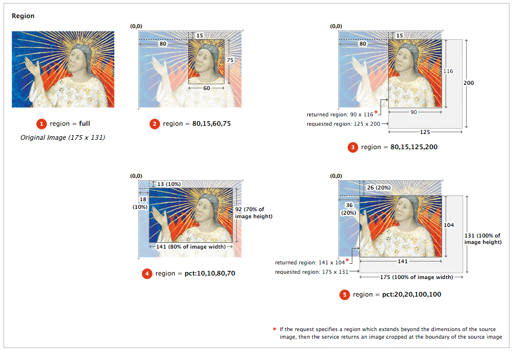
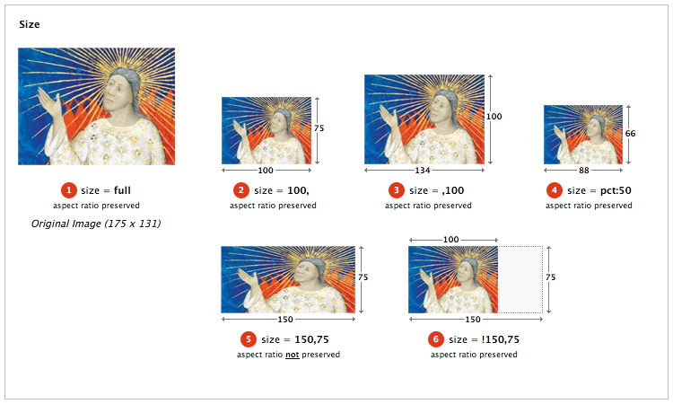
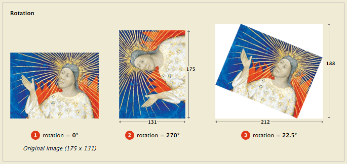
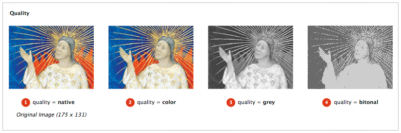
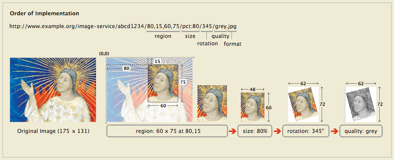

Editors:
Stuart Snydman, Stanford University
Simeon Warner, Cornell University
Robert Sanderson, Los Alamos National Laboratory
Authors:
Ben Albritton, Stanford University
Peter James, British Library
Neil Jefferies, Oxford University
Christopher Jesudurai, Stanford University
Sean Martin, British Library
Roger Mathisen, National Library of Norway
Petter Rønningsen, National Library of Norway
Abstract #
This document describes an API proposed by the International Image Interoperability Framework (IIIF) group for the delivery of images via a standard http request. The IIIF API specifies a web service that returns an image in response to a standard http or https request. The URL can specify the region, size, rotation, quality characteristics and format of the requested image. A URL can also be constructed to request basic technical information about the image to support client applications. The IIIF API was conceived of to facilitate systematic reuse of image resources in digital image repositories maintained by cultural heritage organizations. The API could be adopted by any image repository or service, and can be used to retrieve static images in response to a properly constructed URL.
Please send feedback to iiif-discuss@googlegroups.com
1. Audience #
This document is intended for developers building applications that share digital image assets. This includes:
- Developers building digital image repositories who would like to offer services for easily sharing digital images with other repositories, web applications, or other software that uses images from the web.
- Developers building web applications or software that want to retrieve images from compliant repositories.
- A specifically targeted audience are developers and managers of digital image repositories, web applications and image tools at cultural heritage institutions, like museums, libraries and archives.
2. URL Syntax #
The IIIF Image API can be called in two forms: one to request an image, and a second to request techincal information about the image. Both forms convey the request's information in the path segment of the URI, rather than as query parameters. This makes responses more easily able to be cached, either at the server or by standard web-caching infrastructure. It also permits a minimal implementation using pre-computed files in a matching directory structure.
To allow for extension, this specification does not define the behaviour of an implementing server when it receives requests that do not match one of the two request syntaxes below.
2.1 Image Request URL Syntax #
The IIIF Image API URL for requesting an image MUST conform to the following format:
http[s]://server/[prefix/]identifier/region/size/rotation/quality[.format]
where [] delimits components which are optional.
The URI Template (RFC6750) form is:
http://{server}{/prefix}/{identifier}/{region}/{size}/{rotation}/{quality}{.format}
For example:
http://www.example.org/image-service/abcd1234/full/full/0/native.jpg
The sections of the Image Request URL include:
| Syntax | Description |
|---|---|
http (or https) |
Indicates the use of the http or https protocol in calling the service. |
server |
The host server on which the IIIF-compliant image service resides. |
prefix |
The path on the host server to the IIIF-compliant image service. This prefix is optional, but may be useful when the host server supports multiple services. (note: The prefix MAY contain slashes or constructions that resemble service parameters.) |
identifier |
The unique identifier of the requested image, expressed as a string. This may be an ark, URN, filename, or other unique identifier. Special characters MUST be URI encoded. |
region, size, rotation, quality, format |
Parameters defining the characteristics of the returned image. These are described in detail below. |
See Section 4 - Image Request Parameters.
2.2 Image Information Request URL Syntax #
The IIIF Image API URL for requesting image information MUST conform to the following format:
http[s]://server/[prefix/]identifier/info.ext
where [ ] delimits the optional prefix component, "info" is a literal string, and ext is one of "json" or "xml".
The URI Template (RFC6750) form is:
http://{server}{/prefix}/{identifier}/info.{ext}
For example:
http://www.example.org/image-service/abcd1234/info.json
See Section 5 - Image Information Request for more information.
3. Identifier #
The API places no restrictions on the form of the identifiers that a server may use or support, although the identifier MUST be expressed as a string. All special characters (e.g. ? or #) MUST be URI encoded to avoid unpredictable client behaviors. The URL syntax relies upon slash (/) separators so any slashes in the identifier MUST be URI encoded (aka. percent-encoded, replace / with %2F ). See discussion in Section 9 - URL Encoding and Decoding.
4. Image Request Parameters #
All parameters described below are required for compliant construction of a IIIF image API URL. The sequence of parameters in the URL MUST be in the order described below. The order of the parameters is also intended as the order of the operations by which the service should manipulate the image content. Thus, the image content is first extracted as a region of the source image, then scaled to the requested size, rotated and transformed into the color depth and format. This resulting image content is returned as the representation for the URL. All transformations are performed within the bounds of integer arithmatic. The rounding method is not specified. Floating point numbers should be have at most 10 decimal digits and consist only of decimal digits and “.” with a leading zero if less than 1.
4.1 Region #
The region parameter defines the rectangular portion of the source image to be returned. Region can be specified by pixel coordinates, percentage or by the value “full”, which specifies that the entire region of the source image should be returned.
| Form of Region Parameter | Description |
|---|---|
full |
The complete image is returned, without any cropping. |
x,y,w,h |
The region of the source image to be returned is defined in terms of absolute pixel values. The value of x represents the number of pixels from the 0 position on the horizontal axis. The value of y represents the number of pixels from the 0 position on the vertical axis. Thus the x,y position 0,0 is the upper left-most pixel of the image. w represents the width of the region and h represents the height of the region in pixels. |
pct:x,y,w,h |
The region to be returned is specified as a sequence of percentages of the source image’s dimensions. Thus, x represents the number of pixels from the 0 position on the horizontal axis, calculated as a percentage of the source image’s width. w represents the width of the region calculated as a percentage of the [source image’s width]{style=”font-style: italic;”}. The same applies to y and h respectively. These may be floating point numbers (see Section 5 - Image Information Request). |
If the request specifies a region which extends beyond the dimensions of the source image, then the service should return an image cropped at the boundary of the source image.
If the requested region’s height or width is zero, or if the region is entirely outside the bounds of the source image, then the server MUST return a 400 (bad request) status code.
Examples:
http://www.example.org/image-service/abcd1234/80,15,60,75/full/0/native.jpg
http://www.example.org/image-service/abcd1234/pct:10,10,80,70/full/0/native.jpg
http://www.example.org/image-service/abcd1234/full/full/0/native.jpg

4.2 Size #
The size parameter determines the dimensions to which the extracted region is to be scaled.
| Form of Size Parameter | Description |
|---|---|
full |
The extracted region is not scaled, and is returned at its full size. |
w, |
The extracted region should be scaled so that its width is exactly equal to w, and the height will be a calculated value that maintains the aspect ratio of the requested region. |
,h |
The extracted region should be scaled so that its height is exactly equal to h, and the width will be a calculated value that maintains the aspect ratio of the requested region. |
pct:n |
The width and height of the returned image is scaled to n% of the width and height of the extracted region. The aspect ratio of the returned image is the same as that of the extracted region. |
w,h |
The width and height of the returned image are exactly w and h. The aspect ratio of the returned image MAY be different than the extracted region, resulting in a distorted image. |
!w,h |
The image content is scaled for the best fit such that the resulting width and height are less than or equal to the requested width and height. The exact scaling MAY be determined by the service provider, based on characteristics including image quality and system performance. The dimensions of the returned image content are calculated to maintain the aspect ratio of the extracted region. |
If the resulting height or width is zero, then the server MUST return a 400 (bad request) status code.
The image server MAY support scaling beyond the full size of the extracted region.
http://www.example.org/image-service/abcd1234full/0/native.jpg
http://www.example.org/image-service/abcd1234100,/0/native.jpg
http://www.example.org/image-service/abcd1234,100/0/native.jpg
http://www.example.org/image-service/abcd1234pct:50/0/native.jpg
http://www.example.org/image-service/abcd1234150,75/0/native.jpg
http://www.example.org/image-service/abcd1234!150,75/0/native.jpg

4.3 Rotation #
The rotation value represents the number of degrees of clockwise rotation from the original, and may be any floating point number from 0 to 360. Initially most services will only support 0, 90, 180 or 270 as valid values.
Examples:
http://www.example.org/image-service/abcd1234/full0/native.jpg
http://www.example.org/image-service/abcd1234/full90/native.jpg
http://www.example.org/image-service/abcd1234/full180/native.jpg
http://www.example.org/image-service/abcd1234/full270/native.jpg
http://www.example.org/image-service/abcd1234/full22.5/native.jpg

In most cases a rotation will change the width and height dimensions of the returned image file. The service SHOULD return an image file that contains all of the image contents requested in the [region]{style=”font-style: italic;”} and [size ]{style=”font-style: italic;”}parameters, even if the dimensions of the returned image file are different than specified in the size parameter. The image contents SHOULD NOT be scaled as a result of the rotation, and there SHOULD be no additional space between the corners of the rotated image contents and the bounding box of the returned image file.
For non-90-degree rotations the API does not specify the background color.
4.4 Quality #
The quality parameter determines the bit-depth of the delivered image. The quality value of native requests an image of the same bit-depth as the source image. Values other than native are requested transformations of the bit-depth of the source image.
| Quality Parameter | Returned |
|---|---|
native |
The image is returned at an unspecified bit-depth. |
color |
The image is returned in 24-bit color. |
grey |
The image is returned in 8-bit greyscale |
bitonal |
The image is returned in 1-bit bitonal |
Examples:
http://www.example.org/image-service/abcd1234/full/600,/0/native.jpg
http://www.example.org/image-service/abcd1234/full/600,/0/color.jpg
http://www.example.org/image-service/abcd1234/full/600,/0/grey.jpg
http://www.example.org/image-service/abcd1234/full/600,/0/bitonal.jpg

4.5 Format #
The format of the returned image is optionally expressed as an extension at the end of the URL.
| Extension | Mimetype |
|---|---|
jpg |
image/jpeg |
tif |
image/tiff |
png |
image/png |
gif |
image/gif |
jp2 |
image/jp2 |
pdf |
application/pdf |
Examples:
http://www.example.org/image-service/abcd1234/full/600,/0/native.jpg
http://www.example.org/image-service/abcd1234/full/600,/0/native.png
http://www.example.org/image-service/abcd1234/full/600,/0/native.tif
If the format is not specified in the URI, then the server SHOULD use the HTTP Accept header to determine the client’s preferences for the format. The server may either do 200 (return the representation in the response) or 30x (redirect to the correct URI with a format extension) style content negotiation. If neither are given, then the server should use a default format of its own choosing.
4.6 Order of Implementation #
The sequence of parameters in the URL is intended to express the order in which image manipulations are made against the original. This is important to consider when implementing the service because applying the same parameters in a different sequence will often result in a different image being delivered. The order is critical so that the application calling the service reliably receives the output it expects.
The parameters should be interpreted as if the the sequence of image manipulations were:
Region THEN Size THEN Rotation THEN Quality THEN Format

5. Image Information Request #
The service MUST return technical information about the requested image in JSON and XML formats. The request for technical information MUST conform to the format:
http[s]://server/[prefix/]identifier/info.xml
or
http[s]://server/[prefix/]identifier/info.json
All IIIF compliant services must support both the XML and JSON response.
The response will return the following information
| Element | Required? | Description |
|---|---|---|
identifier |
Required | The unique identifier of the source image, expressed as a string. The identifier MUST be supplied without URI encoding. |
width |
Required | The width of the source image. |
height |
Required | The height of the source image. |
scale_factors |
Optional | Some image servers support the creation of multiple resolution levels for a single image in order to optimize the efficiency in delivering images of different sizes. The scale_factors element expresses a list of resolution scaling factors. |
tile_width |
Optional | Some image servers support the use of predefined tiles to efficiently deliver assembled images. The tile_width element expresses the width of the predefined tiles. |
tile_height |
Optional | The tile_height element expresses the height of the predefined tiles. |
formats |
Optional | The list of image format parameter values available for the image. |
qualities |
Optional | The list of image quality parameter values available for the image. |
profile |
Optional | URI indicating the compliance level supported. Values as described in Section 8. Compliance Levels |
The XML response should conform to the format shown in the following example. W3C XML and Relax-NG schemas are available for validation.
<?xml version="1.0" encoding="UTF-8"?><info xmlns="http://library.stanford.edu/iiif/image-api/ns/"><identifier>1E34750D-38DB-4825-A38A-B60A345E591C</identifier> <width>6000</width> <height>4000</height> <scale_factors> <scale_factor>1</scale_factor> <scale_factor>2</scale_factor> <scale_factor>4</scale_factor> </scale_factors> <tile_width>1024</tile_width> <tile_height>1024</tile_height> <formats> <format>jpg</format> <format>png</format> </formats> <qualities> <quality>native</quality> <quality>grey</quality> </qualities> <profile>http://library.stanford.edu/iiif/image-api/compliance.html#level1</profile> </info>
The JSON response should conform to the format shown in the following example:
{ "identifier" : "``1E34750D-38DB-4825-A38A-B60A345E591C``", "width" : 6000, "height" : 4000, "scale_factors" : [ 1, 2, 4 ], "tile_width" : 1024, "tile_height" : 1024, "formats" : [ "jpg", "png" ], "qualities" : [ "native", "grey" ], "profile" : "http://library.stanford.edu/iiif/image-api/compliance.html#level0" }
6. Server Responses #
6.1 Successful Responses #
Servers may transmit HTTP responses with status codes 200, 302 and 304 when the request has been successfully processed. If the status code is 200, then the entity-body MUST be the requested image or information response. If the status code is 302 or 304, then the entity-body is unrestricted, but it is RECOMMENDED to be empty. If the status code is 302, then the Location HTTP Header MUST be set containing the URL of the image that fulfills the request. This enables servers to have a single canonical URL to promote caching of responses. Status code 304 is handled exactly as per the HTTP specification. Clients should therefore expect to encounter all of these situations and not assume that the entity-body of the initial response necessarily contains the image data.
6.2 Error Conditions #
The order in which servers parse requests and detect errors is not specified. A request will fail on the first error encountered and return an appropriate code with more detail in the response document. Errors are reported at the parameter level only with an option for more detailed text.
Errors should be reported in a standard HTTP response code in the HTTP header as follows:
| Error Code | Description |
|---|---|
400 Bad Request |
This response is used when it is impossible for the server to fulfil the request, for example if the combination of parameters would result in a zero-sized image. In the case of a malformed URL it may not be possible to identify a failed parameter. |
401 Unauthorized |
Authentication is required and not provided. See Section 7 below for details. |
403 Forbidden |
The user, authenticated or not, is not permitted to perform the requested operation. |
404 Not Found |
The image resource specified by [identifier] does not exist |
414 URI Too Long |
As the specification does not support query parameters there should not be a post-amble beyond the image format specifier. However, there may be an embedded escaped URL identifier. Limit requests to 1024 characters. |
415 Invalid Media |
Format not available (implies failure of the format specifier) |
500 Internal Server Error |
The server encountered an unexpected error that prevented it from fulfilling the request. |
501 Not Implemented |
A valid IIIF request that is not implemented by this server. If the requested format is not implemented then a 415 error should be used. |
503 Service unavailable |
Used when the server is busy/temporarily unavailable due to load/maintenance issues. An alternative to connection refusal with the option to specify a back-off period. |
The body of the response for all error conditions should contain an XML fragment with the parameter and optional human readable text as follows. The Content-Type must be “text/xml”.
<?xml version="1.0" encoding="UTF-8" ?> <error ``xmlns="http://library.stanford.edu/iiif/image-api/ns/"``> <parameter>size</parameter> <text>Invalid size specified</text> </error>
The text element is optional and can explain the failure on more detail - for example to distinguish not implemented vs out-of-bounds in the case of a 403.
7. Authentication #
This API does not specify whether the image server will support authentication or what mechanism it might use. In the case of "401 Unauthorized" HTTP error response, the content of the WWW-Authenticate header will depend on the authentication mechanism supported by the server. If the server supports HTTP Basic or Digest authentication then the header should follow RFC2617, for example:
WWW-Authenticate: Basic realm="Images"
If the server supports cookie-based authentication then the response should include the location of the page that will allow the user to login:
WWW-Authenticate: Cookie location="https://example.com/login&redirect={URI}"
Where {URI} is a template parameter that SHOULD be used if the login server supports redirection after login. A client MUST substitute the current page URI in place of {URI} before presenting a login link to the user. Note that while there is widespread agreement that the limitation of WWW-Authenticate to Basic and Digest authentication in the current HTTP specification, there is no standard way to indicate appropriate redirection to a login screen, or convey a URI template to insert a return URI.
8. Compliance Levels #
A service SHOULD specify on all responses the extent to which the API is supported. This is done by including an HTTP Link header (RFC5988) entry pointing to the description of the highest level of conformance of which ALL of the requirements are met. The “rel” type to be used is “profile”, and thus a complete header might look like:
Link: <http://library.stanford.edu/iiif/image-api/compliance.html#level0>;rel="profile"
An image server MAY declare different compliance levels for different images. If the compliance level is not indicated, then a client should assume level 0 compliance only. For detailed compliance definitions see http://library.stanford.edu/iiif/image-api/compliance.html.
The compliance profile URI given in the Link header (between < and >) may also be returned in the profile element of responses to Image Information Requests.
9. URL Encoding and Decoding #
The URL syntax of this API relies upon slash (/) separators which MUST NOT be encoded. Clients MUST percent-encode special characters (the to-encode set below: percent and gen-delims of RFC3986 except the colon) within the components of requests. For example, any slashes within the identifier part of the URL MUST be percent-encoded. Encoding is necessary only for the identifier because other components will not include special characters.
to-encode = "/" / "?" / "#" / "[" / "]" / "@" / "%"
Upon receiving an API request, a server MUST first split the URL path on slashes and then decode any percent-encoded characters in each component.
Additionally, if identifiers include any characters outside the US-ASCII set then the encoding to octets must be defined consistently on client and server, and the octets MUST be percent-encoded. Percent-encoding other characters introduces no ambiguity but is unnecessary.
| Parameters | URL path (without leading http:server/[prefix/]) |
|---|---|
| identifier=id1 region=full size=full rotation=0 quality=native | id1/full/full/0/native |
| identifier=id1 region=0,10,100,200 size=pct:50 rotation=90 quality=native format=png | id1/0,10,100,200/pct:50/90/native.png |
| identifier=id1 region=pct:10,10,80,80 size=50, rotation=22.5 quality=color format=jpg | id1/pct:10,10,80,80/50,/22.5/color.jpg |
| identifier=bb157hs6068 region=full size=full rotation=270 quality=grey format=jpg | bb157hs6068/full/full/270/grey.jpg |
| identifier=ark:/12025/654xz321 region=full size=full rotation=0 quality=native | ark:%2F12025%2F654xz321/full/full/0/native |
| identifier=urn:foo:a123,456 region=full size=full rotation=0 quality=native | urn:foo:a123,456/full/full/0/native |
| identifier=urn:sici:1046-8188(199501)13:1%3C69:FTTHBI%3E2.0.TX;2-4 region=full size=full rotation=0 quality=native | urn:sici:1046-8188(199501)13:1%253C69:FTTHBI%253E2.0.TX;2-4/full/full/0/native |
| identifier=http://example.com/?54#a region=full size=full rotation=0 quality=native | http:%2F%2Fexample.com%2F%3F54%23a/full/full/0/native |
| identifier=id1 image information request, format=json | id1/info.json |
| identifier=id1 image information request, format=xml | id1/info.xml |
Servers which are incapable of processing arbitrarily encoded identifiers SHOULD make their best efforts to expose only image identifiers for which typical clients will not encode any of the characters, and thus it is RECOMMENDED to limit characters in identifiers to letters, numbers and the underscore character.
10. Security Considerations #
This API defines a URI syntax and the semantics associated with its components. The composition of URIs has few security considerations except possible exposure of sensitive information in URIs or revealing of browse/view behavior of users.
Server applications implementing this API must consider possible denial-of-service attacks, and authentication vulnerabilities based on DNS spoofing. Applications must be careful to parse incoming requests (URIs) in ways that avoid overflow or injection attacks.
Early sanity checking of URI’s (lengths, trailing GET, invalid characters, out-of-range parameters) and rejection with appropriate response codes is recommended.
A. Implementation Notes #
- For use cases that enable the saving of the image, it is RECOMMENDED to use the HTTP Content-Disposition header (RFC6266) to provide a convenient filename that distinguishes the image, based on the identifier and parameters provided.
- This specification makes no assertion about the rights status of requested images or metadata, whether or not authentication has been accomplished. Please see the IIIF Metadata API for rights information.
- This API does not specify how image servers fulfill requests, what quality the returned images will have for different parameters, or how parameters may affect performance. See the compliance document for more discussion.
- Image identifiers that include the slash (/ %2F) or backslash (
%5C) characters may cause problems with some HTTP servers. Apache servers from version 2.2.18 support the "AllowEncodedSlashes NoDecode" (link to http://httpd.apache.org/docs/2.2/en/mod/core.html#allowencodedslashes) configuration directive which will correctly pass these characters to client applications without rejecting or decoding them. Servers using older versions of Apache and local identifiers which include these characters will need to use a workaround such as internally translating or escaping slash and backslash to safe value (perhaps by double URL-encoding them). - As described in Section 4.2 (Rotation), in order to retain the size of the requested image contents, rotation will change the width and height dimensions of the returned image file. A formula for calculating the dimensions of the returned image file for a given rotation can be found here.
B. Acknowledgments #
The production of this document was generously supported by a grant from
the Andrew W. Mellon Foundation.
The full IIIF Working Group deserves thanks and recognition for their
continuous engagement, innovative ideas and feedback. Members of the
group not listed as authors or editors above include Aquiles Alencar
Brayner, Richard Boulderstone, Svein Arne Brygfjeld, Tom Cramer, Markus
Enders, Renhart Gittens, David Golding, Tim Gollins, Peter James, Dean
Krafft, Matt McGrattan, Stephane Pillorget, Johan van der Knijff, Romain
Vassilieff, and William Ying.
The inspiration, use cases and initial outline for this API originated
from the work of the Digital Medieval Manuscript Interoperabiltiy
Technical Council.
Attendees of the third annual LibDevConX workshop gave an early draft of
this API a thoughtful hearing and provided essential feedback to ensure
that the API fit with diverse use cases and technical environments.
Many thanks to Matthieu Bonicel, Kevin Clarke, Mark Patton, Lynn McRae,
Willy Mene, Brian Tingle, Ian Davis and Scotty Logan for your thoughtful
contributions to the effort and written feedback.
C. Change Log #
| Date | Editor | Description |
|---|---|---|
| 2012-08-10 | ssnydman | Release 1.0 |
| 2012-07-13 | rsanderson | incorporates responses to RFC feedback |
| 2012-03-09 | ssnydman | Initial release |
| 2012-04-13 | ssnydman | 0.2 after internal review and IIIF April Meeting |
| 2012-05-02 | ssnydman | RFC version |